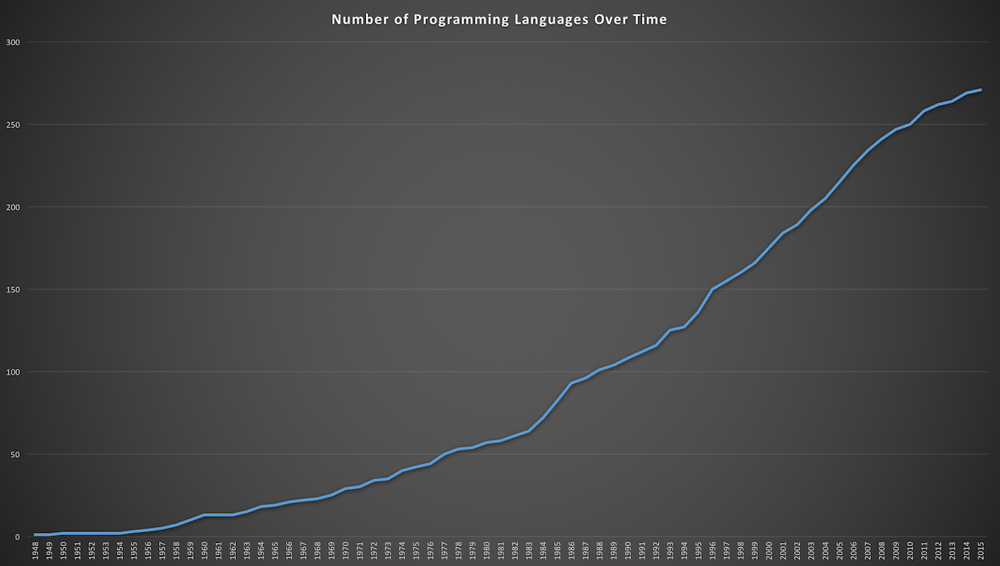

by Breck Yunits
December 12, 2017 — As I build up my database of programming languages I hope to be able to answer questions like:
At the moment I am tracking 533 computer languages and I currently have creation years for more than half of those, including for 271 of the most popular ones.
Here is a simple line graph of the cumulative number of languages I have by year.

I will wait until I have more data to do more serious analysis (for example: the dip in the growth rate toward the end is likely due to my incomplete dataset and not indicative of a trend change).
But until I can provide a more comprehensive analysis, I thought I'd share my first look.
Update (12/10/2017): a number of readers have pointed out that some of the languages on this list are not programming languages. Future posts like this will be sure to exclude those.
Data used in this article as csv:
| language | releaseYear |
|---|---|
| plankalkul | 1948 |
| g-code | 1950 |
| flow-matic | 1955 |
| regex | 1956 |
| fortran | 1957 |
| lisp | 1958 |
| algol | 1958 |
| cobol | 1959 |
| ibm-rpg | 1959 |
| mad | 1959 |
| jovial | 1960 |
| sako | 1960 |
| si | 1960 |
| teco | 1963 |
| ascii | 1963 |
| apl | 1964 |
| basic | 1964 |
| pl-i | 1964 |
| simula | 1965 |
| bcpl | 1966 |
| mumps | 1966 |
| logo | 1967 |
| spss | 1968 |
| b | 1969 |
| gml | 1969 |
| pascal | 1970 |
| forth | 1970 |
| scheme | 1970 |
| isbn | 1970 |
| lse | 1971 |
| c | 1972 |
| prolog | 1972 |
| smalltalk | 1972 |
| intercal | 1972 |
| ml | 1973 |
| sql | 1974 |
| diff | 1974 |
| sed | 1974 |
| tcp | 1974 |
| z-notation | 1974 |
| lex | 1975 |
| yacc | 1975 |
| sas | 1976 |
| s | 1976 |
| awk | 1977 |
| bourne-shell | 1977 |
| idl | 1977 |
| m4 | 1977 |
| datalog | 1977 |
| pearl | 1977 |
| modula-2 | 1978 |
| tex | 1978 |
| x86 | 1978 |
| dbase | 1979 |
| ada | 1980 |
| scribe | 1980 |
| udp | 1980 |
| karel | 1981 |
| maple | 1982 |
| postscript | 1982 |
| turing | 1982 |
| abap | 1983 |
| vhdl | 1983 |
| turbo-pascal | 1983 |
| matlab | 1984 |
| objective-c | 1984 |
| transact-sql | 1984 |
| verilog | 1984 |
| common-lisp | 1984 |
| rpl | 1984 |
| asn-1 | 1984 |
| simulink | 1984 |
| cpp | 1985 |
| clipper | 1985 |
| stata | 1985 |
| ampl | 1985 |
| arm | 1985 |
| bibtex | 1985 |
| bison | 1985 |
| ia-32 | 1985 |
| latex | 1985 |
| mips | 1985 |
| erlang | 1986 |
| labview | 1986 |
| oberon | 1986 |
| eiffel | 1986 |
| fjolnir | 1986 |
| gas | 1986 |
| gdb | 1986 |
| gnuplot | 1986 |
| mathcad | 1986 |
| object-pascal | 1986 |
| sgml | 1986 |
| perl | 1987 |
| sparc | 1987 |
| unicode | 1987 |
| wolfram | 1988 |
| mathematica | 1988 |
| octave | 1988 |
| tcl | 1988 |
| picolisp | 1988 |
| bash | 1989 |
| coq | 1989 |
| http | 1989 |
| z-shell | 1990 |
| haskell | 1990 |
| j | 1990 |
| scilab | 1990 |
| pl-sql | 1991 |
| python | 1991 |
| visualbasic | 1991 |
| qbasic | 1991 |
| antlr | 1992 |
| gzip | 1992 |
| opengl | 1992 |
| powerpc | 1992 |
| lua | 1993 |
| r | 1993 |
| k | 1993 |
| applescript | 1993 |
| brainfuck | 1993 |
| html | 1993 |
| 1993 | |
| utf-8 | 1993 |
| vba | 1993 |
| cilk | 1994 |
| racket | 1994 |
| delphi | 1995 |
| java | 1995 |
| javascript | 1995 |
| php | 1995 |
| ruby | 1995 |
| visual-foxpro | 1995 |
| cfml | 1995 |
| mysql | 1995 |
| qt | 1995 |
| vbscript | 1996 |
| ocaml | 1996 |
| asp | 1996 |
| css | 1996 |
| drakon | 1996 |
| jscript | 1996 |
| lilypond | 1996 |
| postgresql | 1996 |
| puredata | 1996 |
| rest | 1996 |
| squeak | 1996 |
| supercollider | 1996 |
| uml | 1996 |
| xml | 1996 |
| c-- | 1997 |
| mmx | 1997 |
| modelica | 1997 |
| rdf | 1997 |
| rpm | 1997 |
| curl | 1998 |
| actionscript | 1998 |
| soap | 1998 |
| vml | 1998 |
| vvvv | 1998 |
| autoit | 1999 |
| asterisk | 1999 |
| netlogo | 1999 |
| tom-oopl | 1999 |
| unlambda | 1999 |
| xpath | 1999 |
| alice | 2000 |
| csharp | 2000 |
| cmake | 2000 |
| drupal | 2000 |
| geo-ml | 2000 |
| sqlite | 2000 |
| subversion | 2000 |
| wsdl | 2000 |
| xbl | 2000 |
| d | 2001 |
| visualbasicnet | 2001 |
| processing | 2001 |
| json | 2001 |
| nsis | 2001 |
| protobuf | 2001 |
| svg | 2001 |
| tinyc | 2001 |
| yaml | 2001 |
| scratch | 2002 |
| gosu | 2002 |
| jsharp | 2002 |
| restructuredtext | 2002 |
| textile | 2002 |
| groovy | 2003 |
| boo | 2003 |
| autohotkey | 2003 |
| q | 2003 |
| amqp | 2003 |
| llvmir | 2003 |
| sawzall | 2003 |
| whitespace | 2003 |
| wordpress | 2003 |
| scala | 2004 |
| asymptote | 2004 |
| markdown | 2004 |
| nginx | 2004 |
| owl | 2004 |
| solr | 2004 |
| tiddlywiki | 2004 |
| fsharp | 2005 |
| sagemath | 2005 |
| django | 2005 |
| git | 2005 |
| haxe | 2005 |
| linotte | 2005 |
| mercurial | 2005 |
| mql | 2005 |
| puppet | 2005 |
| rails | 2005 |
| powershell | 2006 |
| aws | 2006 |
| hexagon | 2006 |
| jquery | 2006 |
| ooxml | 2006 |
| sass | 2006 |
| scss | 2006 |
| vala | 2006 |
| wml | 2006 |
| yii | 2006 |
| apex | 2007 |
| clojure | 2007 |
| cuda | 2007 |
| cython | 2007 |
| linq | 2007 |
| lolcode | 2007 |
| thrift | 2007 |
| xcore | 2007 |
| xquery | 2007 |
| nim | 2008 |
| geojson | 2008 |
| pandas | 2008 |
| pig | 2008 |
| pure | 2008 |
| sparql | 2008 |
| umple | 2008 |
| go | 2009 |
| coffeescript | 2009 |
| less | 2009 |
| mongodb | 2009 |
| opencl | 2009 |
| redis | 2009 |
| rust | 2010 |
| azure | 2010 |
| risc-v | 2010 |
| dart | 2011 |
| kotlin | 2011 |
| elixir | 2011 |
| google-cloud | 2011 |
| schemaorg | 2011 |
| stripe | 2011 |
| swagger | 2011 |
| webgl | 2011 |
| julia | 2012 |
| elm | 2012 |
| qalb | 2012 |
| typescript | 2012 |
| asmjs | 2013 |
| ats | 2013 |
| crystal | 2014 |
| hack | 2014 |
| swift | 2014 |
| idris | 2014 |
| solidity | 2014 |
| graphql | 2015 |
| webassembly | 2015 |
The data in this post comes from the PLDB database. It is possible to build a continually updating version of this article that updates as more data comes in.